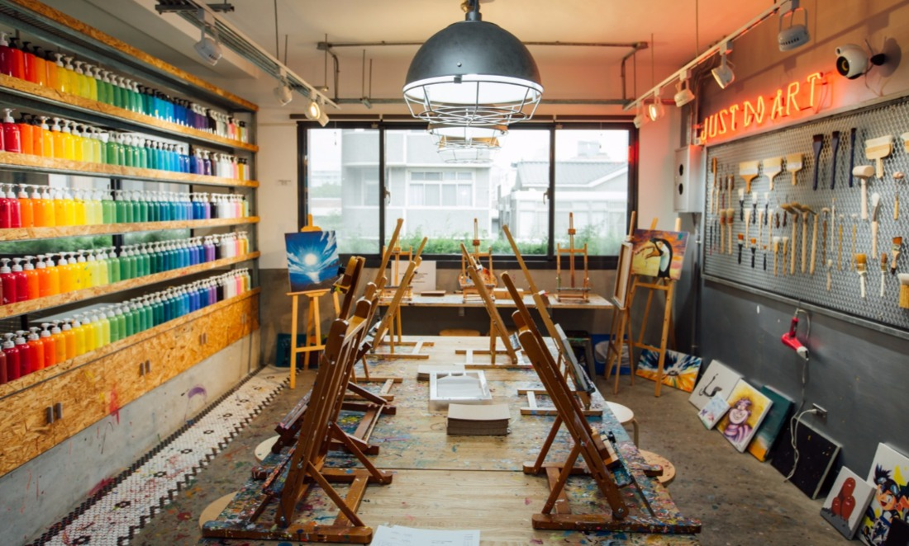

台中美食集合
屋馬燒肉（位於台中市西區公益路111號）
獨特的鮮味雞湯搭配蔥花或味增醬，讓您在享受美味的燒肉之前先開開胃，和用來包肉的生菜及獨家醃漬的黃瓜均無限量供應。嚴選各種頂級肉品，依每種食材的特性搭配醬料醃漬處理，並提供烤肉醬、味增醬、椒鹽及蔥鹽等沾醬，讓燒肉美味多元呈現。
燒肉要好吃是有祕訣的；用青翠的新鮮生菜包著熱滋滋的燒肉和泡菜，大口大口的品嚐，這多層次的口感，保證讓您回味無窮。。

CMYK Gallery(位於台中北區的一間複合式藝術空間)
結合了畫畫、早午餐、咖啡廳以及藝廊，打造一處新型態餐飲空間，還有 IG 美照的繽紛壓克力顏料牆。
可以一邊享受早午餐、下午茶，一邊盡情揮灑藝術創作靈感；另外沒有繪畫基礎的你也可以報名流動畫課程，在早晨或午後享受一個放空創作的美好時光，是非常超特別的台中文青景點。

宮原眼科（位於典雅歷史建築內的冰淇淋店）
建造於西元1927年的「宮原眼科」是由日本眼科博士宮原武熊所興建，也是日治時代臺中規模最大的眼科診所，隨著時代的物換遷移，早已呈廢墟。
宮原眼科成為一座令人嘆為觀止的建築，室內的裝潢也相當有氣勢，像極了哈利波特內霍格華茲學院的場景，來到宮原眼科，千萬不可錯過這裡招牌的冰淇淋，多種口味都是獨家特製配方，冰淇淋旁的配料更是讓人驚呼連連，整塊的土鳳梨酥、乳酪蛋糕、杏仁雪球等等，從沒見過的豐富冰淇淋就在宮原啦！